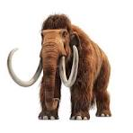

Mamut Lanudo
Extinto: Hace unos 4,000 años.
Causa: Cambio climático y caza por parte de humanos prehistóricos.
El mamut lanudo vivió en Eurasia y América del Norte. Sus colmillos podían medir hasta 4 metros. Fue uno de los últimos de su especie en extinguirse.